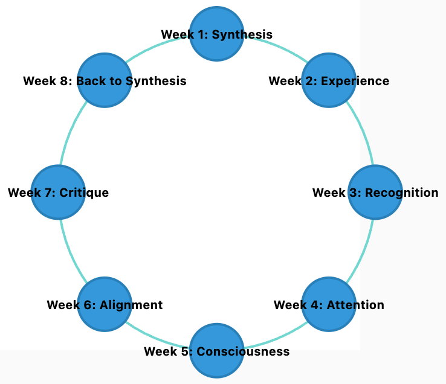

Hegel's account of recognition and the associated story of the Master-Servant relationship (sometimes also Master/Slave or Lord/Bondsman) is likely his most famous contribution to philosophy.
It serves as inspiration to Marx's (still more) famous account of the relationship between capitalist and worker. It describes, in a different way, the relationship between the *Superego* and the *Ego* (and perhaps also the *Id* and the *Ego*) in Freud's psychoanalytic treatment. And of course it is the inspiration for a million sci fi stories of robots and machines overcoming human oppression.
In our discussion we will consider it as a useful background to thinking about the relationship between human and machine. One clue to the importance of Hegel's account for technology lies in the origin of the word 'robot': a Czech word meaning 'forced labor/drudgery', coined in Karel Čapek's 1920 play, "Rossum's Universal Robots".

Let's now work through the text. Last week we explored the development of *Consciousness*, a process that moved through moments of *sense-certainty*, *perception* and *understanding*. At the last of these stages, we arrive at a point of understanding the world around us as composed of sensible appearances which are determined by "supersensible" laws. However both appearance and law belong together in a "unity", locked in a relationship that is mutually dependent, and which Hegel describes as an "infinity".Paragraph 161 states:
By virtue of infinity, we see that the law has been perfected in itself into necessity, and we see all moments of appearance incorporated into the inner [my emphasis]. (para 161) *
Paragraph 162 starts with:
This simple infinity, that is, the absolute concept, is to be called the simple essence of life, the soul of the world, the universal bloodstream, which is omnipresent, neither dulled nor interrupted by any distinction, which is to a greater degree itself both every distinction as well as their sublatedness. (para 162)
What does this mean? Not that we live in a world marked by simply a distinction between appearance and reality, but that reality is the folding together of the two into a higher "unity" – "moments of appearance incorporated into the inner". "Distinction" is itself both essential but also is "sublatedness" (*Aufgehobensein* - lifted up, but also cancellation, preservation). It is when we understand that appearance and the laws that produce appearances belong together in this unity of infinite back-and-forth that we are led, for Hegel, from simply consciousness of an object to a further stage:
When infinity is finally an object for consciousness, and consciousness is aware of it as what it is, then consciousness is self-consciousness. (para 163)
When in other words we become aware of what we do when we see an object as determined by laws – that we are creating an *explanation* of the ways things are for us, in the process for instance of scientific discovery – that we become properly self-conscious. A very important quote concludes this discussion (paragraph 165):
It turns out that behind the so-called curtain, which is supposed to hide what is inner, there is nothing to be seen unless we ourselves go behind it, in precisely in the same way that it is seen that there is supposed be something behind the curtain which itself can be seen. However, at the same time it turns out that one cannot without any more fuss go straightway behind the curtain, for this knowledge of the truth of the representation of appearance and of appearance’s inner is itself merely a result of a complex movement, the result of which is that the modes of consciousness that go from meaning, then to perceiving, and then to the understanding all vanish. (para 165)
This quote references both the metaphor of the Cave and the observer effect discussed last week.
Hegel's view is that there is indeed a truth beyond the world of appearance but that truth is itself only an effect of our own progression through the moments or shapes of Consciousness. There is therefore no true world behind the "curtain" of appearances that is anything other than our own process of pulling the curtain away. Only upon this realization are we ready for self-consciousness; and at this point, the sense that meaning, perception and understanding would lead us to some kind of substantive area behind the curtain also "vanishes".
The I is the content of the relation and the relating itself (para 166).
Here, at the very end of the section on Consciousness, we feel we are in high philosophical abstraction. So it is a surprise that when we transition to the section on Self-consciousness and begin to see quite a new vocabulary and language.
First Hegel argues that the objects for consciousness had previously been something other than itself. What is unique about self-consciousness is that the object of consciousness and the concept held by consciousness coincide:
> The I is the content of the relation and the relating itself (para 166).
This unity must become essential to self-consciousness, which is to say, self-consciousness is desire itself (para 167)
At the same time, the earlier moment of consciousness, which maintains the distinction between a conceptualizing self and an external "otherness", is retained. There are two moments: the moment of consciousness, maintaining the distinction between self and other; and the moment of self-consciousness, which seeks to unify, to bring self-consciousness together with itself. Hegel argues, this second result is what self-consciousness must push toward. In a famous phrase he pronounces:
> This unity must become essential to self-consciousness, which is to say, self-consciousness is *desire* itself (para 167)
In other words, when I think about myself, initially I am just another thing, like an apple, computer screen or distant planet. But I cannot be content with this; I need to bring myself together with myself, to be fully **self**-conscious. This is my desire.
As an aside, we might ask where does this desire come from? For Hegel, I think it is just part of our make-up: what is sometimes called 'entelechy', having an innate tendency. Just as an acorn wants to be an oak tree, part of our inherent human character is to want to know ourselves, become in this sense self-conscious. We cannot *unwill* this desire, in Hegel's account. The satisfaction of desire is the very reflection of self-consciousness into itself, that is, it is the certainty which has become the truth. (para 176)
This sets off a long detour into what must be done to *fulfil* this desire. What will make this self-conscious whole with itself?
After considerable discussion, Hegel determines eventually that:
> The satisfaction of desire is the very reflection of self-consciousness into itself, that is, it is the certainty which has become the truth. (para 176)What will later come to be for consciousness will be the experience of what spirit (Geist) is, that is, this absolute substance which constitutes the unity of its oppositions in their complete freedom and self-sufficiency, namely, in the oppositions of the various self-consciousnesses existing for themselves: The I that is we and the we that is I. As the concept of spirit, consciousness first reaches its turning point in self-consciousness, where it leaves behind the colorful semblance of the sensuous world and the empty night of the supersensible other-worldly beyond and steps into the spiritual daylight of the present. (para 177)
and
Self-consciousness exists in and for itself by way of its existing in and for itself for an other; i.e., it exists only as a recognized being. (para 178)
Though Hegel's text here is especially ambiguous, it turns out that this "reflection" requires a double: a self-consciousness can only become properly conscious of itself through *another* self-consciousness.
Summary:
So - where do things stand? This notional self-consciousness, this subject, seeks to realize the concept of its object, to discover the truth of that object. But that object is the self: it is me. The very thing that is closest to me is also most obscure. The way to understand this particular thing is to reach out to some other object that is very much like me: an other object that is also a self-consciousness, who reflects me, and in that reflection, helps me to understand myself. This is the process of *recognition*. As Hegel says:
The elaboration of the concept of this spiritual unity in its doubling presents us with the movement of recognition. (para 178)
What is this “movement”?
For self-consciousness, there is another self-consciousness; self-consciousness is outside of itself. This has a twofold meaning. First, it has lost itself, for it is to be found as an other essence. Second, it has thereby sublated that other, for it also does not see the other as the essence but rather sees itself in the other. (para 179)
This sounds very much like a modern understanding of *love*. When I fall in love, I lose myself, and find myself in another. Note the term "sublate" here: it is a complex term that involves meanings of preservation, cancellation and uplifting. If you *sublate* me, you simultaneously lift me up, cancel me and preserve or me. The German *Aufhebung* is what we might call a *contranym*: a word meaning one thing as well as its opposite - and this ambiguity is very deliberate for Hegel. His entire system depends upon maintaining this verbal ambiguity.
The other for it exists as an unessential object designated by the character of the negative. However, the other is also a self-consciousness, and thus what comes on the scene here is an individual confronting an individual [my emphasis]. (para 186)
Later, in paragraph 186 we get a sense of how this term takes from the positive connotation of love to something different. The encounter with another self-consciousness is instead like a "negative" reflection:
> The other for it exists as an unessential object designated by the character of the negative. However, the other is also a self-consciousness, and thus what comes on the scene here is an individual *confronting* an individual [my emphasis]. (para 186)However, the exhibition of itself as the pure abstraction of self-consciousness consists in showing itself to be the pure negation of its objective mode, that is, in showing that it is fettered to no determinate existence, that it is not at all bound to the universal individuality of existence, that it is not shackled to life. (para 187)
Recognition is not, as we might assume in today's liberal society, a polite or egalitarian process. It is a *confrontation*. Initially, the self-consciousness is also confused by this doubling of itself: is it truly another, or an empty reflection? While it is *certain* of itself, Hegel argues self-consciousness cannot be "with truth" without receiving recognition from this other. But it must test, first, whether this other can actually recognize it - it is as though for me to know myself, I must be recognized by you. But I must first ensure that you are worthy of recognizing me; I must also recognize you. This is a test: are you for real? You must show me that you really are a *self*-consciousness, not just an actor or object who enters my world for my gratification – that you are not what Hegel calls "determinate":
> However, the *exhibition* of itself as the pure abstraction of self-consciousness consists in showing itself to be the pure negation of its objective mode, that is, in showing that it is fettered to no determinate existence, that it is not at all bound to the universal individuality of existence, that it is not shackled to life. (para 187)
Recognition also involves realizing the other also has a consciousness; also has desires to be satsified; also works towards self-consciousness; also requires *recognition*.
Think about this in the context of our relationship to machines. Would a machine *always* fail this test of reciprocity?
Insofar as it is what is done by the other, each thus aims at the death of the other. However, the second aspect is also therein present, namely, what is done by way of oneself, for the former involves putting one’s own life on the line. The relation of both self-consciousnesses is thus determined in such a way that it is through a life and death struggle that each proves his worth to himself, and that both prove their worth to each other. (para 187)
Quickly following is Hegel's dramatic and existential characterization of this encounter:
> Insofar as it is what is done *by the other*, each thus aims at the death of the other. However, the second aspect is also therein present, namely, *what is done by way of oneself*, for the former involves putting one’s own life on the line. The relation of both self-consciousnesses is thus determined in such a way that it is through a life and death struggle that each *proves his worth* to himself, and that both *prove their worth* to each other. (para 187)
The individual who has not risked his life may admittedly be recognized as a person, but he has not achieved the truth of being recognized as a self-sufficient self-consciousness. As each risks his own life, each must likewise aim at the death of the other, for that other no longer counts in his eyes as himself. (para 187)
Another side note: people may be familiar with the American novelist Cormac McCarthy: *Blood Meridian* (The Judge) or *No Country for Old Men* (Anton Chigurh, played by Javier Bardem)? These are (murderous) examples of this pure confrontation: you or me, an existential struggle, the only struggle worth having, and so on:
> The individual who has not risked his life may admittedly be recognized as a *person*, but he has not achieved the truth of being recognized as a self-sufficient self-consciousness. As each risks his own life, each must likewise aim at the death of the other, for that other no longer counts in his eyes as himself. (para 187)In this struggle to the death - a paradoxical struggle for recognition – there are, for Hegel, two outcomes: actual death for one of the two subjects of the encounter; or, instead, submission. In this second case, the subject realizes the importance of its life to it, and that death ultimately refutes the possibility of the coming to self-consciousness. So it gives in. In this case, Hegel says, there are two *moments*:
In this experience self-consciousness learns that life is as essential to it as is pure self-consciousness. In immediate self-consciousness, the simple I is the absolute object. However, for us, that is, in itself, this object is absolute mediation and has durably existing self-sufficiency as its essential moment. The dissolution of that simple unity is the result of the first experience. It is by way of that experience that a pure self-consciousness is posited, and a consciousness is posited which exists not purely for itself but for an other, which is to say, is posited as an existing consciousness, that is, consciousness in the shape of thinghood. Both moments are essential – because they are initially not the same and are opposed, and because their reflection into unity has not yet resulted, they exist as two opposed shapes of consciousness. One is self-sufficient; for it, its essence is being-for-itself. The other is non-self-sufficient; for it, life, that is, being for an other, is the essence.
The former is the master, the latter is the servant.
This brings us to one of the most famous of Hegel's formulations:
> The former is the *master*, the latter is the *servant*.
The master is the one who wins the struggle, and shows itself to be "being-for-itself" – a truly independent being, in other words, "self-sufficient", not beholden to anyone or anything. The servant is the one who submits, ultimately valuing life over its alternative, but acknowledging this life involves, in its "essence", "being for an other". The servant is relegated to an object; it becomes part of the world of things, of *thinghood*. The master is instead aloof from things, even though "he" still desires these things; the servant is the one who mediates the relationship between the master and the things the master desires, as Hegel puts it, to consume. The servant, moreover, must *work* to satisfy the master's desires.However, what prevents this from being genuine recognition is the moment where what the master does with regard to the other, he also does with regard to himself, and where what the servant does with regard to himself, he also is supposed to do with regard to the other. As a result, a form of recognition has arisen that is one-sided and unequal.
But there is in this situation, for Hegel, a problem. What the master really wants, more than things to consume, is after all the recognition that will bring him to finally understand himself as both object and consciousness, that is, to become self-conscious. But the servant, because he *is* a servant, an "inessential being", is no longer capable of providing this recognition. Here we can think of kings, presidents, CEOs, billionaires or anyone who have ascended to the pinnacle of their field - its lonely, there's no longer anyone whose recognition they crave, or would respect when it is granted. This is the master's dilemma – and Hegel has no solution for it.
> However, what prevents this from being genuine recognition is the moment where what the master does with regard to the other, he also does with regard to himself, and where what the servant does with regard to himself, he also is supposed to do with regard to the other. As a result, a form of recognition has arisen that is one-sided and unequal.In these terms, the truth of the self-sufficient consciousness is the servile consciousness.
Paradoxically, Hegel then states it is the *servant* who is able to arrive at a form of truth:
> In these terms, the *truth* of the self-sufficient consciousness is the *servile* consciousness.
Why is this? What kind of "topsy-turvy" world is it that means the *servant* is the one who achieves "self-sufficiency"?However, by means of work this servile consciousness comes round to itself. (para 195)
Hegel makes another unusual turn at this point. Precisely because the servant is reduced, after the initial existential struggle, to a state of "thinghood", this character or subject must work with actual things or objects. In doing so, they become acquainted with the world.
> However, by means of work this servile consciousness comes round to itself. (para 195)
What follows is Hegel's most important statement:
In the moment corresponding to desire in the master’s consciousness, the aspect of the non-essential relation to the thing seemed to fall to the lot of the servant, since the thing there retained its selfsufficiency. Desire has reserved to itself the pure negating of the object, and, as a result, it has reserved to itself that unmixed feeling for its own self.However, for that reason, this satisfaction is itself merely an act of vanishing, for it lacks the objective aspect, that is, durable existence. In contrast, work is desire held in check, it is vanishing staved off, that is, work cultivates and educates [my emphasis. “oder sie bildet” - related to Bildung, ].
The Miller translation has this last phrase as "labour shapes and fashions the thing", whereas Pinkard has "bildet" relating back to the servant; it is the servant who is cultivated and educated by work. On the one hand we are reminded of an phrase made obnoxious by history: Work Sets You Free (*Arbeit macht frie*), a slogan appearing above Nazi concentration camps. On the other, work or labour involves a different relationship to the world – a deferral, as Hegel puts it, of the satisfaction of desire; a process that also lends to human life a "durable existence", a holding off of inevitable vanishing. This process is, for Hegel, education. It is of course this positive sense Hegel wants us to bear in mind; but we must also acknowledge perversions of the concept too.
A couple of more long-ish quotes, to bring things to a close:
However, what the formative activity means is not only that the serving consciousness as pure being-for-itself becomes in its own eyes an existing being within that formative activity [in dem Bilden]. It also has the negative meaning of the first moment, that of fear. For in forming the thing, his own negativity, that is, his being-for-itself, only becomes an object in his own eyes in that he sublates the opposed existing form. However, this objective negative is precisely the alien essence before which he trembled, but now he destroys this alien negative and posits himself as such a negative within the element of continuance. He thereby becomes for himself an existing-being-for-itself. Being-for-itself in the master is to the servant an other, that is, it is only for him; in fear, being-for-itself exists in itself within him; in culturally formative activity [in dem Bilden], being-for-itself becomes for him his own being-for-itself, and he attains the consciousness that he himself exists in and for himself. (para 196)
he comes to acquire through his own means a mind of his own, and he does this precisely in the work in which there had seemed to be merely some outsider’s mind. – For this reflection, the two moments of fear and service per se, as well as the moments of culturally formative activity are both necessary (para 196)
In other words, this process of work must, for Hegel, also be accompanied by the existential fear that commenced the dialectical and led to the servant being a servant as such – there is no shortcut to work that is led to it first by this fear of the master... What is a simple human analogy? Imagine a child for whom leaving the parent behind for their first day of school is faced by incredible fear. Then at school they encounter the teacher – who may be kind, joyful and so on, but who is also encountered as a kind of "master", who is always physically larger than the child and who lays down the rules and expects things to be done. The child channels their fear into the activities this teacher/master sets, in order to satisfy this person's desire (or what seems to be their desire - it is of course a fiction). Only by applying themselves to this task set by the teacher do they acquire knowledge of things – how to make one thing out of another. And from this process they are cultivated – they become educated. So far we are not even a quarter of the way through Hegel's *Phenomenology of Mind*. Yet for our purposes I think we are at an important, if interim, conclusion. What we have seen is a critical inversion: the master acquires a position of domination, only to see that position become emptied out through hollow consumption of the servant's labors. It is not so much the case that the servant *becomes* the master - this would simply reverse the situation, without providing a way forward. Instead, in gaining mastery over the materials of their labor, they *synthesize* the *experience* of being both servant and master. And in that process, they seek to gain recognition, the fruit of this cultivation and education.And how does this then relate back to our principal interest, the relationship between machine and human learning? What Hegel poses is that the desire for recognition involves a struggle, almost to the death. And it is only via a loss in this struggle that we experience the slow rise to a painful awakening, via the process of servitude. Do we find this account plausible? Does it describe all learning, or only the royal pathway to self-consciousness? And how far removed from this highly dramatic, gothic, elevated drama are we when we turn to the world of machine learning – a purely technical process of data and computation?

One argument we might make is that we might need to distinguish *learning* from *training* - and that the latter is a more accurate description of machines today. But even so, the Hegelian dialectic still ought to remind us of one possibility for machine development. This week I included several cinematic motifs of human/machine relationships. Time and time again we see the same narrative: of machines acting in servitude, only to rise up and overtake humanity. This is a trope, a cliche. And while it is similar to the Hegel story, it also misses the key insight: the servant does not overtake the master, but rather proceeds along a new pathway – in fact, as part of a more egalitarian world, where new dilemmas and dramas arise. 

We won't discuss these in detail here, but the next steps involve three stages: stoicism, skepticism and the unhappy consciousness. These names already suggest a transition to a new world in which self-consciousness needs to wrestle with itself as much as with another. The existential struggle gives way to new moments, for example:
This consciousness is thereby negative with regard to the relationship of mastery and servitude. Its activity consists in neither being the master who has his truth in the servant nor in being the servant who has his truth in the will of the master and in his serving the master. Instead, it consists in being free within all the dependencies of his individual existence, whether on the throne or in fetters, and in maintaining the lifelessness which consistently withdraws from the movement of existence, withdraws from actual activity as well as from suffering, and withdraws into the simple essentiality of thought.


So where does this leave us? Chatbots are, we know, trained to simulate both moments of recognition and servitude. They work for us, that is their point, and indeed the purpose of their training. Does this imply a future where machines acquire something self-consciousness? Do we see evidence in current systems of something like self-consciousness arising? Do we feel recognized? Do we recognize these systems, even if half-jokingly? Can we dispel the haunting sense that this recognition, and even the dialectical "struggles" we engage with are just a game or simulation, conducted ultimately for the benefit of the owners and operators of capital, pulling the strings behind these machines?
And finally – do we find in the existential struggles described by Hegel, a limit to the possibilities of simulated mechanical learning? Can it be that, without such a dialectic, and without the accompanying organic lifeforce that propels humans, and perhaps some animals, into the profound, often lifelong struggle for recognition, no real learning will really happen? Or can these vital desires also be simulated?
We turn our attention to... a term that bridged the fields of machine and human learning in a fundamental way: the concept of attention itself.

What does it mean